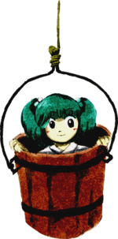
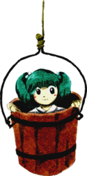

- Welcome to Touhou Wiki!
- Please register to edit. For assistance, check in with our Discord server or IRC channel.
Kisume
| キスメ Kisume kisɯme (♫) | |
|---|---|
|
 Kisume in Subterranean Animism The Fearsome Well SpiritMore Character Titles | |
| Species | |
| Abilities |
Dropping will-o'-the-wisps |
| Location | |
Appearances | |
| Official Games | |
| |
| Print Works | |
| |
Kisume (キスメ) is a rather shy Tsurube-otoshi who usually spends her time in buckets. She is often seen in dark places such as caves or wells. As a midboss with no dialogue and a sparse official profile, little is known about her.
General Information[edit]
Kisume was the stage 1 midboss of Subterranean Animism and has made a cameo appearance in Oriental Sacred Place chapter 10 and Forbidden Scrollery chapter 2.
Ability[edit]
- Ability to drop will-o'-the-wisps
It is to literally drop will-o'-the-wisps from the objective that is on top of her head. It probably comes from her species as tsurubebi (釣瓶火, lit. "well-bucket fire"), thought to be the same as tsurube-otoshi. Her spell cards have many that drop danmaku vertically, which would be the specialty of her species.
Character Design[edit]
Origin[edit]
Tsurube otoshi (lit. bucket dropper) are a type of youkai believed to have originated in the Chuubu region of Japan. They usually live atop trees, and when humans come close to the tree a bucket or a severed head drops down and eats them. They are also sometimes depicted as flaming spirits. There is also a traditional Japanese proverb somewhat related to her species: "The autumn sun descends like a bucket falling into a well" (秋の陽は釣瓶落とし Aki no Hi wa Tsurube Otoshi). It is a proverb used to indicate how the days in Autumn get shorter.
Name[edit]
Her full name is Kisume (キスメ). According to ZUN, her name is written in katakana to give it an old feel, and it's not written in kanji because "that would make her seem too strong".[1]
Design[edit]
Kisume has a pale skin with dark teal hair tied up in pigtails by white hair beads. The bucket she sits in is a cherry brown with black hoops near the top and bottom. She wears a white robe with an obi.
Kisume's Appearances[edit]
Windows Games[edit]
- Subterranean Animism
- Main article: Subterranean Animism Story
In the events of Subterranean Animism, she attacks the heroine on her way to the underground by dropping on her. She is disposed of quickly.
Spin-offs[edit]
- Double Spoiler
In Double Spoiler, Kisume appeared as a stage 3 target, where she uses a few spell cards and had Aya Shameimaru and Hatate Himekaidou take photos of her and her danmaku.
Literature[edit]
- Symposium of Post-mysticism

Back in 1984, Aya Shameimaru reports that during Gensokyo's winter, children were finding skeletal remains of a human while playing around a dried-up well, to which it ended up that the well was declared to be off-limits. Apparently, a tsurube-otoshi youkai (presumably Kisume) came out of well saying "So is THIS the body you dropped down here?" and threw the bones at them. There were no-one missing, so for who the bones belong to is a mystery.
The bones disappeared while no-one was looking during preparations to bury it in Muenzuka. This rolled onto a case whether there was any sort of incident or not, along with the identity of the previous owner of the bones. Yukari Yakumo though it was by the youkai from the Underworld and that they wanted to scare the humans since their powers come from the negative energy of humans, but it may've been a simple misunderstanding. There was a non-intervention agreement pact made between the underworld youkai and the surface, so the situation could become complicated. Tengu hope to avoid trouble with the underground.
The incident was settled as silver birch branches have been mistaken for bones, to which no ominous occurrences had happened at the Human Village. At a later date, it was confirmed that the dried-up well was filled in with dirt; who did this is unknown.
Spell Cards[edit]
Additional Information[edit]
- Both Kisume and Yamame Kurodani use the same background image while performing a Spell Card.
- Her Subterranean Animism portrait is very low-res, compared to many other portraits by ZUN.
- Kisume is one of the few characters to not make a cameo appearance in Hopeless Masquerade.
Fandom[edit]
Official Profiles[edit]
|  | ○１面中ボス 恐るべき井戸の怪 キスメ 種族：釣瓶落とし 暗い夜に道を歩いていると真上から落ちてきて、頭をぶつけてしまう恐怖の妖怪。 |
Stage 1 mid-boss The Fearsome Well Spirit
Species: Tsurube otoshi A fearsome youkai who drops straight down onto you from above when you're walking the streets late at night. |
Official Sources[edit]
- 2008/08/16 Subterranean Animism - Official profile (Character Settings.txt)
- 2009/07/28 The Grimoire of Marisa - Kisume's Spell Card
- 2010/03/14 Double Spoiler - Stage 3 spell cards comments
- 2010/08/26 Oriental Sacred Place - Chapter 10
References[edit]
- ↑ Cara☆Mel (25 December 2008). "Interview on Subterranean Animism with Cara☆Mel" (in 日本語). Retrieved 22 August 2011.
| This page is part of Project Characters, a Touhou Wiki project that aims to write proper descriptions for all official characters of Touhou Project. Please keep the character page guidelines in mind when contributing. |